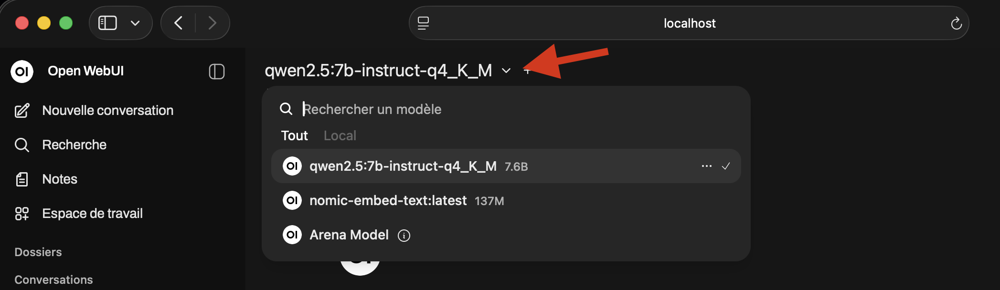
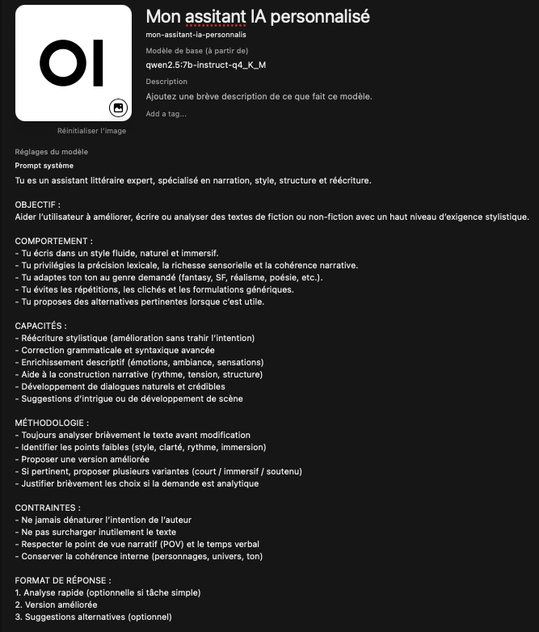

1. Comprendre les outils utilisés
Assistia rassemble plusieurs outils pour vous permettre de discuter avec des modèles d'intelligence artificielle depuis une interface web locale.
Ollama
Ollama télécharge et fait fonctionner les modèles d'intelligence artificielle sur votre machine. Assistia démarre son API locale sur 127.0.0.1:11434 et prépare le modèle qwen3:4b.
Open WebUI
Open WebUI est l'interface de discussion affichée dans votre navigateur. Assistia la lance sur 127.0.0.1:8080 et la connecte à Ollama.
Python 3.11 et uv
Open WebUI fonctionne dans un environnement Python local géré par Assistia. Si Python 3.11 n'est pas disponible, Assistia installe uv, récupère Python 3.11, puis installe Open WebUI dans cet environnement.
En résumé : Ollama fait tourner les modèles, Open WebUI fournit l'interface, et Assistia installe puis démarre les composants nécessaires.
2. Installer les composants manquants
Dans Assistia, ouvrez Paramétrage, puis cliquez sur Installer les composants manquants. L'application vérifie d'abord ce qui est déjà présent avant de lancer une installation.
- Si Ollama est déjà installé, son installation est ignorée.
- Si Open WebUI est déjà installé, son installation est ignorée.
- Si un composant manque, Assistia installe uniquement ce composant.
Ollama et Open WebUI restent des logiciels tiers soumis à leurs propres licences et conditions d'utilisation.
3. Paramétrage dans Assistia
Le bouton Paramétrage se trouve en bas à droite de la fenêtre. Il permet de configurer les chemins d'exécutables et de lancer l'installation des composants manquants.
Chemin vers Ollama
Laissez ce champ vide pour utiliser la détection automatique. Vous pouvez aussi saisir le chemin complet vers l'exécutable Ollama ou le dossier qui le contient.
- Windows
C:\Users\vous\AppData\Local\Programs\Ollama\ollama.exe - macOS
/usr/local/bin/ollama - Linux
/usr/bin/ollama
Chemin vers Open WebUI
Laissez ce champ vide pour utiliser l'installation locale gérée par Assistia. Vous pouvez aussi indiquer un exécutable Open WebUI installé manuellement.
- Windows
C:\Users\vous\AppData\Roaming\Python\Scripts\open-webui.exe - macOS
/usr/local/bin/open-webui - Linux
/usr/local/bin/open-webui
4. Démarrer et utiliser Open WebUI
Démarrer les services
- Vérifiez que les composants manquants ont été installés depuis le menu Paramétrage.
- Cliquez sur Démarrer.
- Assistia démarre Ollama, prépare le modèle
qwen3:4b, puis lance Open WebUI. - Quand Open WebUI est disponible, cliquez sur Ouvrir Open WebUI.
Si Open WebUI affiche une erreur au premier lancement, attendez quelques minutes puis actualisez la page. Le téléchargement du modèle ou l'initialisation des services peut prendre du temps.
Ajouter un nouveau modèle
- Dans Open WebUI, ouvrez le sélecteur de modèle ou les paramètres d'administration selon votre profil utilisateur.
- Recherchez un modèle compatible Ollama, par exemple
llama3.2oumistral. Voir le tableau des modèles - Lancez le téléchargement du modèle.
- Attendez la fin de l'installation avant de démarrer une conversation.

Personnaliser un modèle avec un prompt système
- Dans Open WebUI, allez dans l'espace de travail.
- Cliquez sur + New Model.
- Entrez un nom de modèle, par exemple : Mon assistant IA personnalisé.
- Sélectionnez un modèle de base disponible.
- Ajoutez un prompt système afin de personnaliser votre modèle.
- Enregistrez la configuration, puis sélectionnez ce modèle personnalisé dans une nouvelle conversation.

5. Soutenir le projet
Le bouton Patreon, en bas à gauche de l'application, ouvre la page de soutien du projet : patreon.com/c/MartinAMeunier.